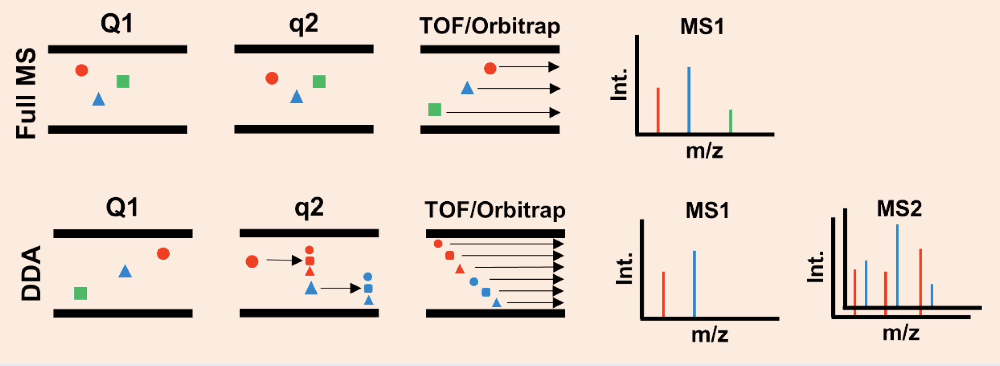
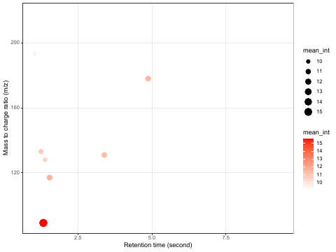

Slot 93 · ms-features · Metabolomics: from peaks to names · layout mock
Host: 02-1 cell 3, the processing steps under four headings: Peak detection and integration, Deconvolution and
alignment, Database matching and identification and Quantification and table generation. The misconception, from the
catalogue: an m/z match is an identification. This mock draws each page at the widget's 550px. Every number is computed on this
page from _lab/ms-features-data.js, which holds the lesson's own MAF values: the 26 metabolites' m/z, RT and formula, and six real samples' abundances.
Only the peak shapes and the noise are simulated, because the MAF holds no raw traces. The blue-ruled boxes in §8 are your calls.
02-1 cell 0 · untargeted acquisition

02-3 · massqc_report: m/z against RT

the axis reads "second", but the values are minutes (lactic acid at 1.33) only 8 of the 26 are drawn; why is unchecked
1 · Measured before the mock
Three findings set the design. (1) Better mass accuracy narrows the formula and stops there. At the study's unit resolution, CHNOS formulas fit m/z 131. At 5 ppm, only one does: C5H8O4. Within that one formula, glutaric and ethylmalonic acid have exactly the same mass, so no instrument separates them. (2) The lesson's own data has the case. Ethylmalonic acid, 02-4's top hit, is detected in all 179 samples. Its isomer glutaric acid is detected in 30 of 179, and its detected values start sharply at , which looks like the assay's limit of detection. (3) RT is what told them apart: the two elute 1.28 min apart, and this targeted study matched each to an authentic standard. The other two isomer pairs are 0 in every sample, so they would draw nothing.
2 · How many pages: cell 3's headings
A recommended. Alignment has a setting that loses on both sides (§4): a window that is too narrow splits one compound into several features, and one that is too wide merges glutaric and ethylmalonic into one. That makes it a page of its own. The table at the end is a page with no control and no press, so it fits at the foot of Identification. Deconvolution is left out, because the data has no co-eluting pair to separate.
3 · The Peaks page — detection, then integration
Sample (), one of the 30 in which both C5H8O4 acids are detected. The two peaks have the lesson's own RTs and areas. The noise is set so a peak at glutaric's floor () sits exactly at S/N 3, the study's limit-of-detection rule.
B recommended. The map is your 02-3 figure redrawn, with RT in minutes and every metabolite detected in this sample shown. It is where "a feature is an m/z and an RT" comes from. The trace below is the map's slice at one m/z, so detection and integration happen on a picture whose origin is visible. A starts at the slice and has to explain where it came from in words.
4 · The Alignment page — one feature across samples
Six real samples, the same m/z slice. Each sample's RTs are shifted by a small simulated amount, as happens from run to run. Peaks closer in RT than the window are grouped into one feature.
A recommended. It is cell 3's own wording: peaks are grouped by m/z and RT. The window is the one control, and each of its three values shows a different outcome: too narrow splits ethylmalonic acid into several features, 0.3 min gives two, and too wide gives one feature holding two compounds, whose abundance is their sum. B corrects the shifts first, as XCMS does. That is more faithful to the software, but it adds a step the notebook does not name.
5 · The Identification page — mass, then retention time
The ethylmalonic feature from §4, at its measured m/z and RT, compared with the lesson's 26 as the database.
A recommended. It draws the finding in three rows that narrow down. A Mass tolerance control (±0.5 Da as the study's instrument, ±5 ppm as a high-resolution one) changes only the first row: 40 formulas, then 1. The second row stays at two compounds either way, and only the RT row gets to one. The level reached is written beside each row, using Schymanski et al. 2014's five levels (5 exact mass, 4 formula, 3 candidates, 2 library spectrum, 1 reference standard). B is the candidate list a search returns, which is accurate but does not show that the tolerance has stopped mattering.
6 · Arm C's fourth page, for comparison: the table
7 · The rail, as recommended
Readout: on Peaks, each peak's RT, height over the noise (S/N) and area. On Alignment, the number of features and each one's samples. On Identification, the candidates left and the level reached.
8 · Your calls
8.1 · Pages (§2) A · Peaks · Alignment · Identification, the table at the foot (recommended) | B · Peaks · Identification | C · four, Table its own page
8.2 · The Peaks page (§3) A · the trace at one m/z alone | B · the m/z × RT map above, the trace as its slice (recommended)
8.3 · The Alignment page (§4) A · group within an RT window, 0.05 · 0.3 · 1.5 min (recommended) | B · correct the shifts first, then group
8.4 · The Identification page (§5) A · three rows that narrow down (formulas, compounds, RT), with the level reached (recommended) | B · the candidate list
8.5 · The database A · the lesson's 26 (recommended for now): the isomers are already in it, and every RT is the study's own | B · HMDB's count of compounds with each formula, as a number beside the row. This needs a fetch from hmdb.ca, which I'll make only on your yes, and HMDB has no RT for most entries
8.6 · What decides between isomers A · RT against an authentic standard (recommended; it is what this study did) | B · RT and an MS2 spectrum. This needs the two acids' spectra from MassBank first, measured to see whether they differ at all
8.7 · The data A · the lesson's m/z, RT, formulas and six real samples' areas; peak shapes and noise simulated (recommended) | B · fully simulated
8.8 · Colours A · as drawn (recommended): the trace in ink; a detected peak's area --c-empirical;
the S/N 3 line dashed --c-reference; features --c-cluster-a… (groups the software made, which nobody assigned); a standard's
RT --c-reference; the compound that matches --c-highlight | B · say which to change
8.9 · The presses A · Detect, then Integrate on Peaks; Align on Alignment; Match mass, then Match RT on Identification (recommended) | B · no presses; each page drawn finished
Left to the draft as conventional: Gaussian peak shapes, the noise seed, and the per-sample RT shifts fixed in the engine. Detection by local maxima over the S/N 3 line. Grouping by chaining peaks whose RT gap is within the window. Title and subtitle wait for the copy audit.